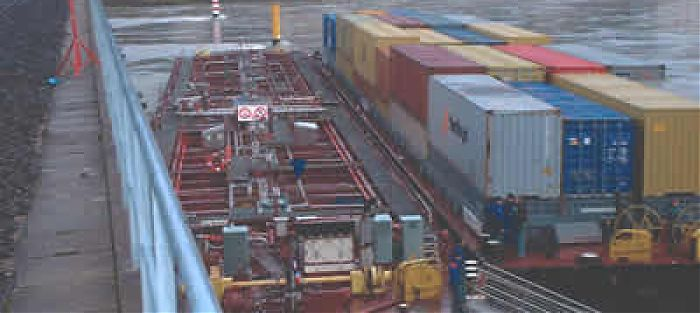

2004 год
 Утром 18 января 2004 года буксир Annemasse шел вверх по течению реки от Фос-сюр-Мер в Лион. Примерно в это время и произошло столкновение со опорой железнодорожного моста. Annemasse состояла из двух барж: одна для перевозки контейнеров, другая объемом 2200 м3 для транспортировки жидкого бензола. После толчка буксир начал тонуть. Из пяти членов экипажа, находившихся на борту, один погиб, еще четырем удалось спастись. Утечка бензола, произошедшая в результате аварии, вызвала загрязнение площадью 300 м вокруг судна. Начал свою работу Мобильный центр реагирования. Транспортировка газа по трубопроводу в рамках железнодорожного моста была приостановлена. Был создан трехуровневый план действий. Во-первых, необходимо было снять контейнер с баржи. Во-вторых, было решено перекачать бензол, оставшийся на борту одной из барж. Наконец, было решено эвакуировать Annemasse из района аварии. В качестве меры предосторожности во время выкачки бензола с баржи были эвакуированы 500 местных жителей, проживающих в окрестностях реки. Баржу освободили от груза бензола, затем отбуксировали. Температура окружающей среды, которая была выше точки плавления бензола, не помешала процессу откачки жидкого бензола, чему способствовал ряд благоприятных факторов: стабильные погодные условия и тот факт, что буксир Annemasse имел двойной корпус. Положительным моментом стало и то, что коммуникация между службами, осуществлявшими откачку, была налажена на «отлично». Тем не менее, большой объем информации об аварии, часто бессвязной, оказался слишком запутанным для лиц, принимающих решения. Отсутствие специализированного плана на случай непредвиденных для речной перевозки опасных материалов ситуаций также не способствовало улучшению положения. Этот инцидент привел к пересмотру политики ведомственных управлений по безопасности полетов и анализа рисков и к созданию специализированного плана на случай непредвиденных ситуаций.